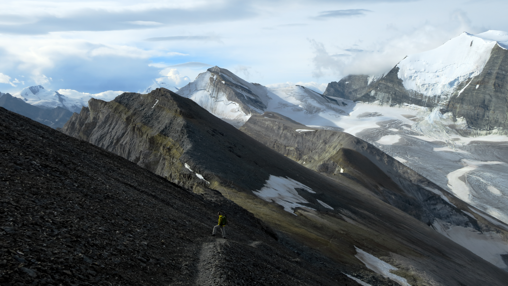

Hiking — Overview
 Descent from the summit of the Üssers Barrhorn — one of our all-time favourite hikes.
Welcome!
Here you’ll find a compilation of hikes from in and around Switzerland. We’ve done our best to include details such as:
- Distance and approximate walking times
- Difficulty rating
- Photos
- Maps
A Word of Caution
Keep in mind that in case you choose to undertake any of the hikes listed on this website, you do so at your own risk.1 While hiking is generally regarded as a laid back and relaxing sport, severe injury or even death are never out of the question when navigating in the mountains.
In short: know your limits, do your research, and use your brain.
Swiss Alpine Club (SAC) Difficulty Ratings
There’s a whole zoo of different difficulty rating systems depending on the sport (hiking, climbing, mountaineering, etc) and the country you’re in. One of the main ones that’s used in Switzerland for designating the difficulties for hiking trails are the so-called “SAC Berg- und Alpinwanderskala” which roughly translates to “SAC Mountain and Alpine Hiking Scale”; this is a scale from T1 (easiest) to T6 (most difficult). Routes listed with a “+” indicate tours which are above an average level of difficulty for that class (so a T4+ is more difficult than a T4, but not quite in T5 territory yet).
Below is a rough English translation of what each of these difficulty levels entails.2 For full details, check out the original SAC difficulty designations here.
| Difficulty | Characteristics | Requirements |
|---|---|---|
|
|
|
|
|
|
|
|
|
|
|
|
|
|
|
|
|
These difficulty ratings assume that the tour is performed
- Good weather
- Dry terrain
- Good snow conditions
- Etc.
A common misconception is that T5 or T6 hikes are less difficult than “easy”
high alpine tours (these use a different difficulty scale). Many T5 or T6
tours have little to no opportunities to secure oneself the way one may be
able to on easier high alpine routes
Some Useful (Mostly German) Geographic Words to Know
There are a lot of words that you’ll likely come across when people list the names of different places in the mountains. Here are a few common terms/prefixes that might be useful to know:
Canton : The Swiss version of a “state” or a “province”.＿horn : A type of pyramid shaped mountain; usually with 3 or 4 distinct faces. Formed through glacial erosion on each face, so they’re usually at fairly high elevations.Piz ＿ : Similar meaning to “horn”; typically used in the Canton of Graubünden (eastern Switzerland)＿stock : Another name for a certain peak; are usually (but not always) at lower elevations than horns.＿spitz : Literally means “point”; does not really give an indication to how high the mountain is.＿joch : A saddle or gully between two peaks.＿pass : Usually a road that connects two valleys. These often serve as connection points to go from one Canton to another.＿tal : Means “valley”.＿gletscher : Means “glacier”.＿firn : Snow that stays all-year round without melting but has not yet turned to ice to form a glacier.＿see : Means “lake”.＿hütte SAC : “Hütte” means “hut” and “SAC” stands for “Swiss Alpine Club”; you can stay overnight at these. The food they provide is usually awesome as well. 10/10 would recommend.